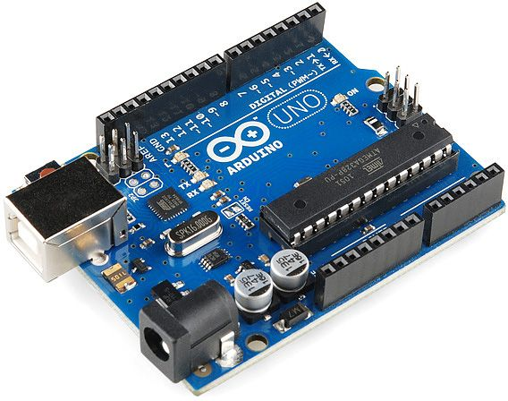

The Arduino Uno R3 is a microcontroller board based on the ATmega328 (datasheet). It has 14 digital input/output pins (of which 6 can be used as PWM outputs), 6 analog inputs, a 16 MHz crystal oscillator, a USB connection, a power jack, an ICSP header, and a reset button. It contains everything needed to support the microcontroller; simply connect it to a computer with a USB cable or power it with a AC-to-DC adapter or battery to get started.
The Uno differs from all preceding boards in that it does not use the FTDI USB-to-serial driver chip. Instead, it features the Atmega16U2 (Atmega8U2 up to version R2) programmed as a USB-to-serial converter.
Revision 2 of the Uno board has a resistor pulling the 8U2 HWB line to ground, making it easier to put into DFU mode.
Revision 3 of the board has the following new features:
1.0 pinout: added SDA and SCL pins that are near to the AREF pin and two other new pins placed near to the RESET pin, the IOREF that allow the shields to adapt to the voltage provided from the board. In future, shields will be compatible both with the board that use the AVR, which operate with 5V and with the Arduino Due that operate with 3.3V.
The second one is a not connected pin, that is reserved for future purposes.
Stronger RESET circuit.
Atmega 16U2 replace the 8U2.
"Uno" means one in Italian and is named to mark the upcoming release of Arduino 1.0. The Uno and version 1.0 will be the reference versions of Arduino, moving forward. The Uno is the latest in a series of USB Arduino boards, and the reference model for the Arduino platform; for a comparison with previous versions, see the index of Arduino boards.
Summary
Microcontroller: ATmega328
Operating Voltage: 5V
Input Voltage (recommended): 7-12V
Input Voltage (limits): 6-20V
Digital I/O Pins: 14 (of which 6 provide PWM output)
Analog Input Pins: 6
DC Current per I/O Pin: 40 mA
DC Current for 3.3V Pin: 50 mA
Flash Memory: 32 KB (ATmega328) of which 0.5 KB used by bootloader
SRAM: 2 KB (ATmega328)
EEPROM: 1 KB (ATmega328)
Clock Speed: 16 MHz

(A arduino UNO.)
You can find links to basic guides here:
Information pulled from:
http://www.trossenrobotics.com/p/arduino-uno.aspx